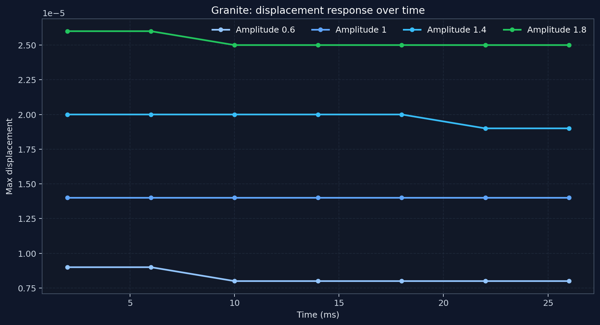
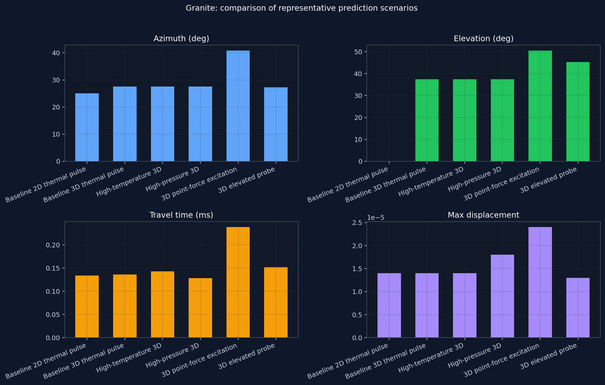
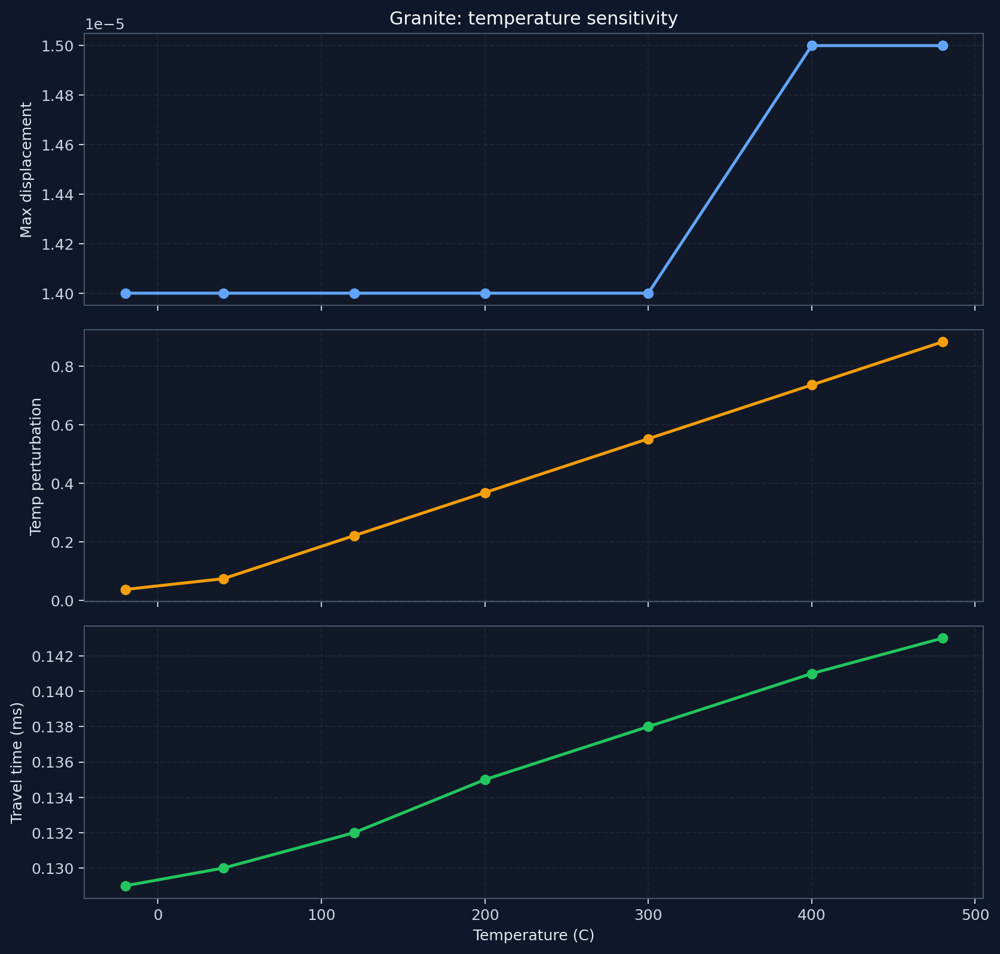
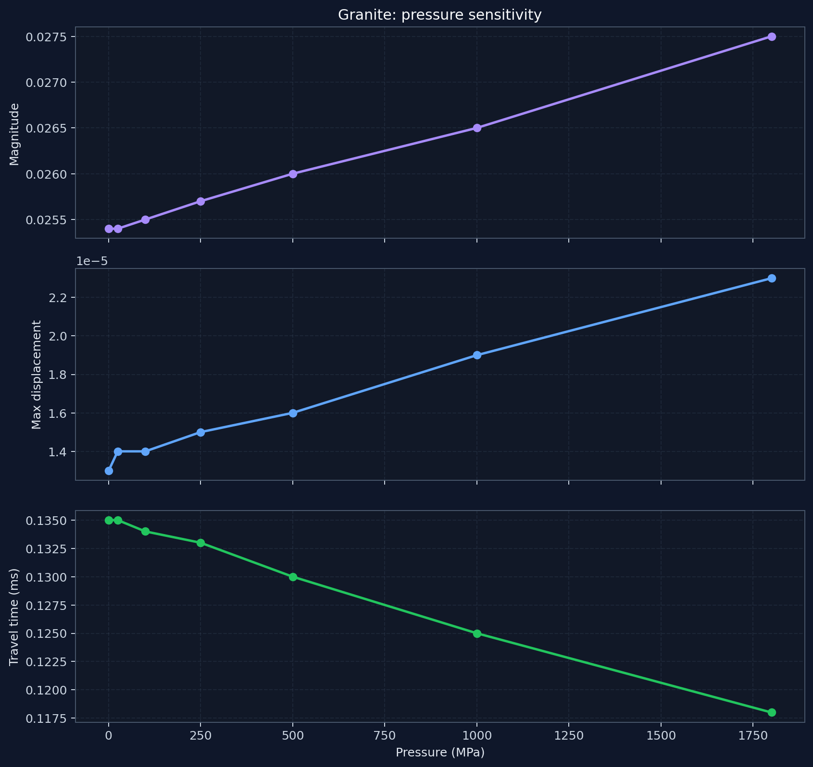
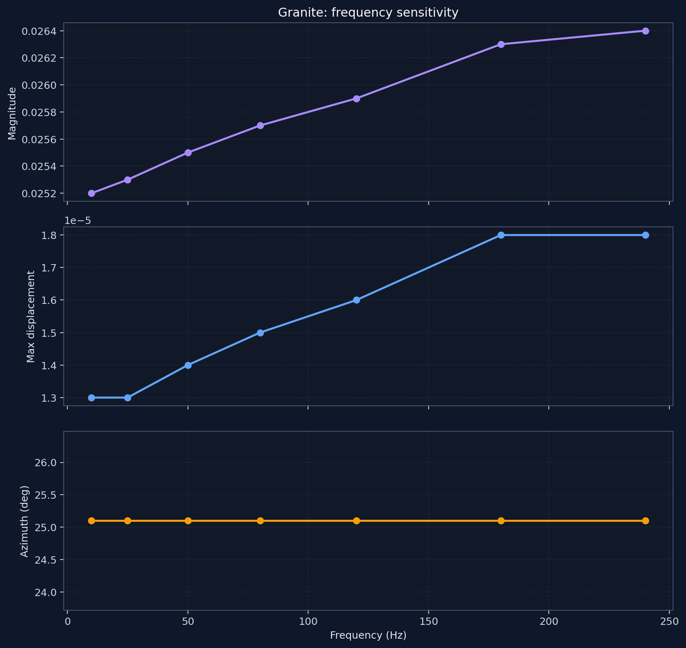
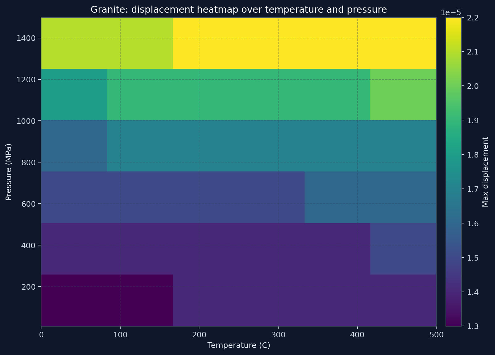

Generated from the isolated granite-analytics/ package on 2026-04-30T22:41:37.224667+00:00.
The scripts are medium-parameterized even though this report uses granite as the input medium.
Backend model route: pinn.
Total predictions154
Errors0
Highest elevation50.45 deg
Shortest travel time0.128 ms
Key findings
Temperature sweep changed max temperature perturbation by 0.846, while azimuth stayed comparatively stable in the 2D pulse setup.
Pressure sweep changed displacement by 0.000010, showing stronger impact on field intensity than on direction.
3D probe-depth sweep produced an elevation range of 13.60 degrees, which confirms that the current pipeline reacts to z-axis geometry.
Representative scenarios
Scenario
Azimuth
Elevation
Travel time
Max displacement
Temp perturbation
Baseline 2D thermal pulse
25.10
0.00
0.134
0.000014
0.331204
Baseline 3D thermal pulse
27.57
37.45
0.136
0.000014
0.328917
High-temperature 3D
27.57
37.45
0.143
0.000014
0.767463
High-pressure 3D
27.57
37.45
0.128
0.000018
0.328917
3D point-force excitation
40.77
50.45
0.238
0.000024
0.460481
3D elevated probe
27.23
45.22
0.152
0.000013
0.310883
Chart gallery

Time-series sweep showing how peak displacement evolves with different source amplitudes.

Comparison of directional and field metrics across baseline, thermal, pressure and 3D perturbation cases.

Temperature sweep for granite in a 2D setup.

Pressure sweep emphasizing how the current model changes displacement and travel time.

Frequency sweep with magnitude, displacement and azimuth response.

Heatmap of max displacement over the temperature-pressure grid.